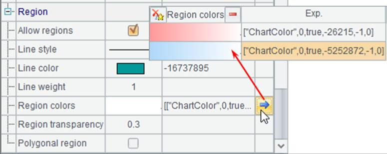
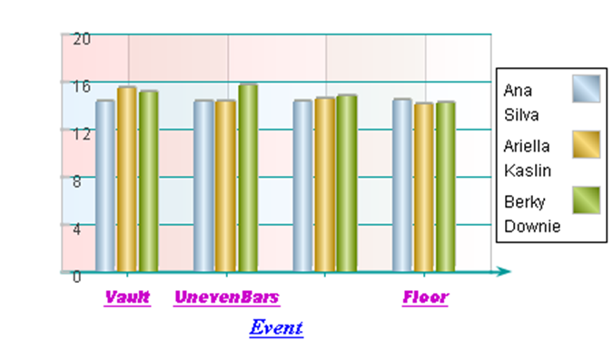

In the coordinate plane, you can plot a region of grid lines according to the major tick marks, so that the chart will look pleasing and become easy to observe. By default white color alternate with dark blue for the grid background of the coordinate axes. The colors can be modified in the chart properties dialog box. Modify the preceding plotting algorithm by editing A5¡¯s code to set the properties for the background grid region of y-axis:

Set Line style as the default solid line, specify values for Line color and Region colors, and change value for Region transparency from 0.6 to 0.3. A sequence parameter is used to set the colors of the grid region. Click the right-most arrow button on the property setting dialog box to edit the parameter on a popup window of Sequence parameter value.
According to the above setting, the plotting result is:

You see that the color of grid region in horizontal direction has changed. With certain colors set for the grid region, transparency needs to be adjusted too. That way, an overlay effect in grid region of different axes will be created.
You can also hide the grid region by setting the property of Allow regions as false.